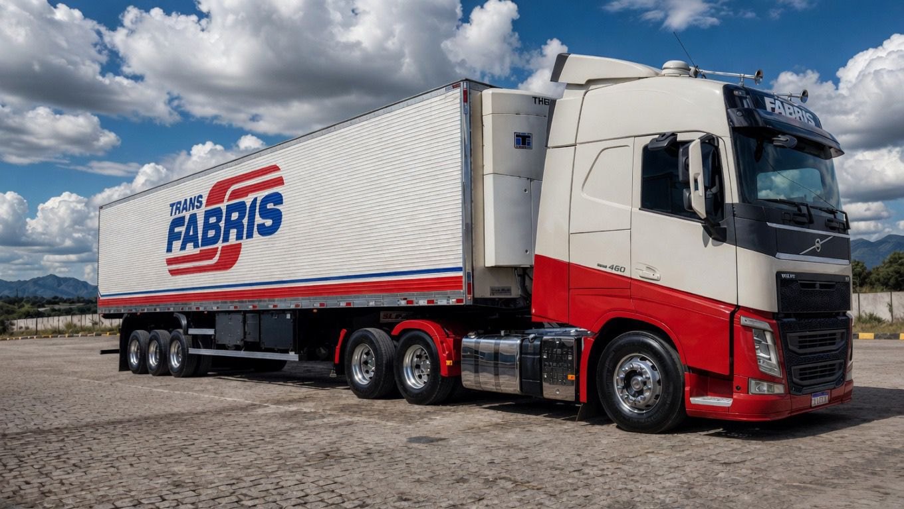
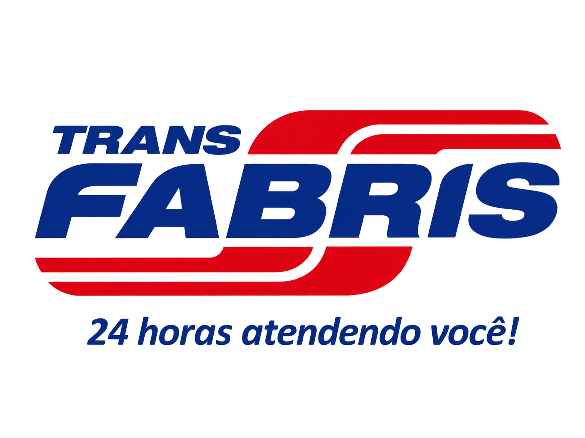
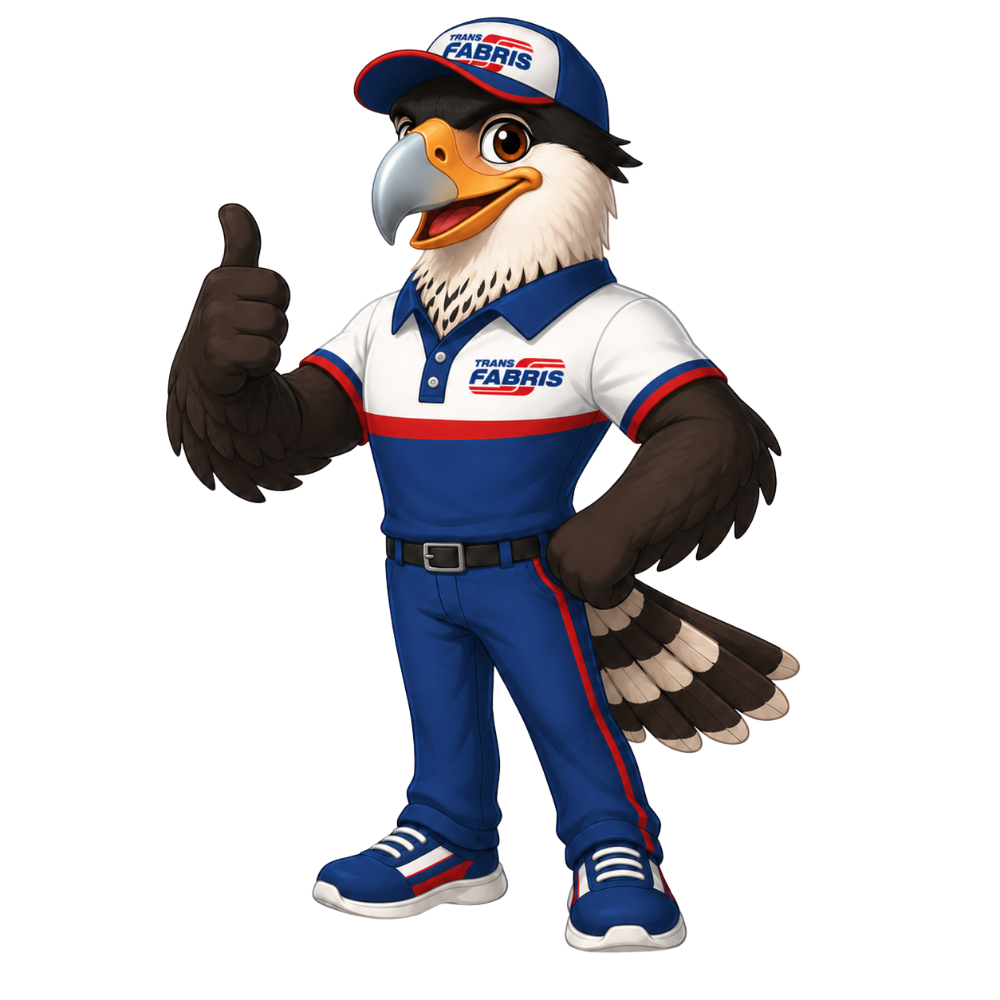

A Transportadora Fabris oferece soluções em transporte rodoviário com atendimento contínuo, segurança operacional e compromisso em cada entrega.
Navegue pelas modalidades e conheça as principais soluções da Transportadora Fabris.

Transporte dedicado para cargas que exigem exclusividade, maior controle da operação e eficiência no prazo de entrega atendendo todo o Brasil.
Mais do que transportar cargas, a Transportadora Fabris trabalha para entregar confiança, organização e eficiência em cada etapa da logística.
Nossa equipe está pronta para entender a sua necessidade e apresentar a melhor solução em transporte para a sua empresa.

© 2026 Transportadora Fabris. Todos os direitos reservados.
